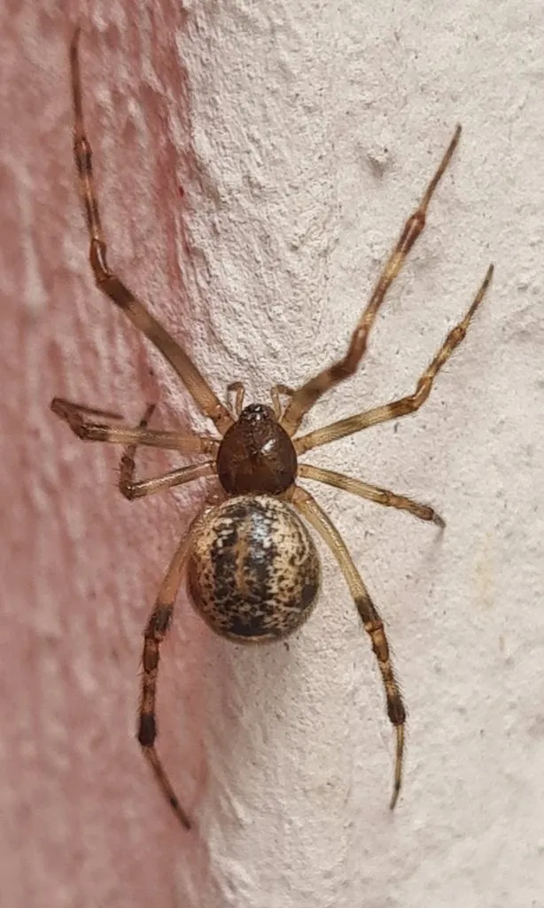

蛛形动物 · 动物界
温室希蛛 Parasteatoda tepidariorum

在墙角、窗框结不规则立体网的常见家蛛，腹部圆鼓带斑，捕食蚊蝇，几乎遍布人类居所。
- 分类
- 门节肢动物门纲蛛形纲目蜘蛛目科球蛛科属希蛛属
- 栖息环境
- 房屋墙角、窗框、棚顶、畜舍与树洞等避风处
- 地理分布
- 世界各地，中国各地室内外普遍分布
- 保护级别
- 常见种，无保护需求，对人无害
物种志
温室希蛛的雌蛛体长约六至八毫米，雄蛛约四毫米。头胸部短小呈黑褐色，腹部圆鼓呈球形，灰褐至黄褐色，上面有不规则的深色斑纹和白色斑点。八足细长，第三步足常比其他足短。它结的是不规则的立体网，丝线杂乱地铺在墙角，不像园蛛的圆网那样规整，网的上下都有丝线牵连。
它分布于世界各地，中国各地室内外均有，栖息在房屋墙角、窗框、棚顶、畜舍和树洞等避风处。雌蛛守在网中央或网边的丝线上，捕食蚊子、苍蝇、蛾子等飞虫，猎物触网后迅速用丝缠绕再注入毒液。雌蛛把卵囊挂在网上，可同时带多个卵囊，幼蛛孵化后先聚集再分散。它对人类无害，咬伤罕见且轻微，是室内常见的益蛛。
形态与习性
- 体长雌蛛六至八毫米，雄蛛约四毫米
- 腹部圆鼓呈球形，有深色斑与白点
- 网型不规则立体网，丝线杂乱铺于墙角
- 捕食蚊、蝇、蛾等飞虫
- 卵囊挂于网上，可同时携带多个
- 安全性对人无害，咬伤罕见且轻微
趣味知识
- 墙角那团乱七八糟的蛛网，多半就是它的作品，它从来不织圆网。
- 一只雌蛛能同时挂好几个卵囊，网上一串小圆球都是它的孩子。
- 它把蚊子苍蝇当主食，是屋里最省心的免费捕虫器。